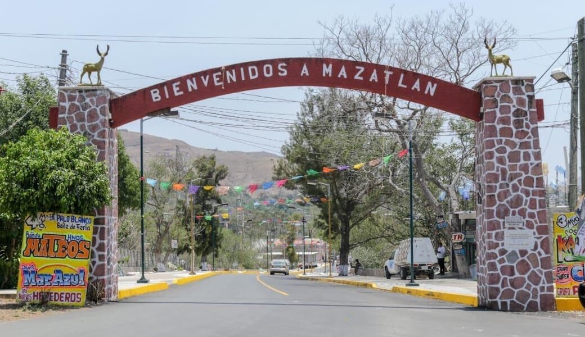

Mazatlán es la Comisaría con mayor número de habitantes del municipio de Chilpancingo. Su población es totalmente mestiza. Esta ubicado a 20 Kilómetros de Chilpancingo, sobre la carretera Federal México Acapulco. Esto provoca que Chilpancingo sea el centro laboral y comercial mas importante de los mazatlecos. La comunicación con la capital del estado es eficiente y rápida. Los días martes, en Mazatlán, se realiza un tianguis al que concurren comerciantes de otros pueblos, pero existe un mercado permanente.
